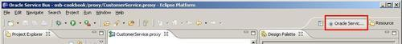
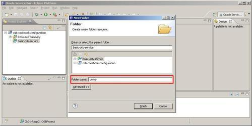

After creating the empty OSB project, we will prepare a folder structure to be used to organize the project. OSB allows you to use folders to build-up a project structure which helps to better find the various artifacts inside the OSB project.
Make sure that the empty OSB project—basic-osb-service from the previous recipe is available in the Eclipse OEPE. Also make sure that the Oracle Service Bus perspective is active in Eclipse. The active perspective can be identified in the upper-right corner of the Eclipse window:

To switch to another perspective, click on the Window menu, select Open Perspective | Other and then select the Oracle Service Bus in the list of perspectives.
If after a while a certain perspective gets messed up and some windows or views are missing, then the perspective can always be reset to the factory settings by clicking on the menu Window | Reset Perspective and then confirming the dialog with the OK button.
In Eclipse OEPE, perform the following steps:
proxy in the Folder name field:
business, wsdl, xsd, and transformation. These are the most common folders and they altogether form the basic OSB project structure used in this book.Folders help to structure the projects and by that organize the different artifacts that we will create later. The folder structure will also be visible after the deployment of a project in the OSB console. So at runtime, if someone (that is, the administrator) needs to navigate to a certain artifact through the console, a clever folder structure can make life much easier.
The meaning of the folder structure that we will use in this book is listed in the following table:
|
Folder name |
Used for organizing |
|---|---|
|
|
business services artifacts |
|
|
proxy services artifacts |
|
|
SOAP-based web service interfaces |
|
|
the XML schema files |
|
|
Artifacts for doing data model transformations, such as XQuery and XSLT scripts |
In some specific recipes, we will add some additional folders. The ones shown in this recipe just represent the most commonly used ones.